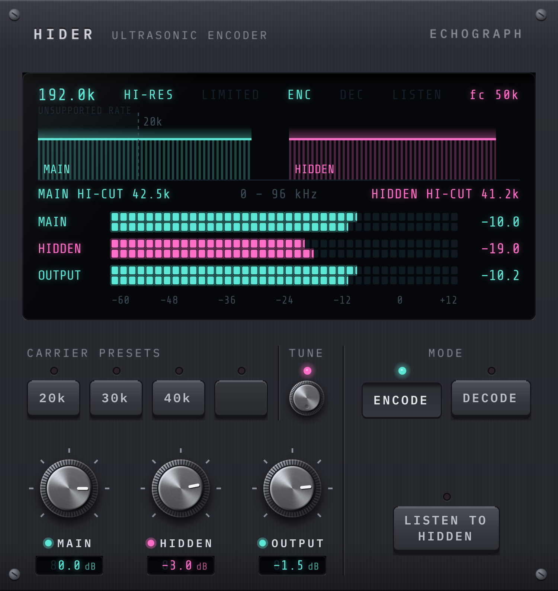
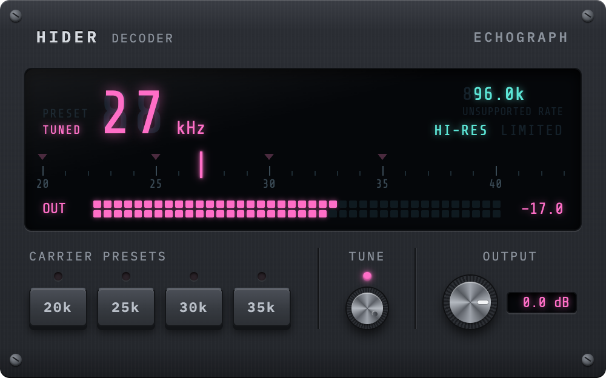
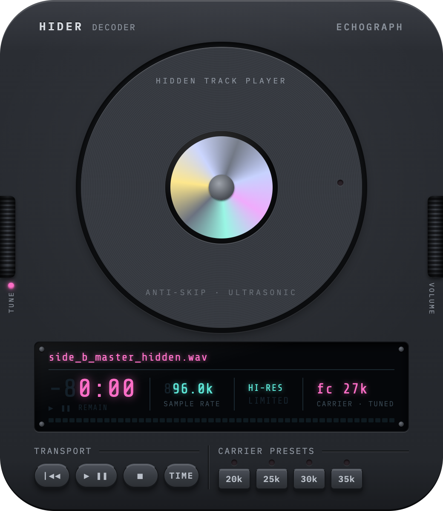

Most of what we build starts as a solution to someone else's problem and occasionally one turns into something worth releasing on its own.
Hider encodes a second signal into the ultrasonic band of high-sample-rate audio — inaudible (except to your dog), riding inside the mix. An encoding/decoding plugin and a standalone decoder, built for anyone who wants to hide something in the music itself.
Requires audio at a high enough sample rate to carry an ultrasonic band. Encode with the plugin; decode with either the plugin or the standalone app.

Anyone can listen to a Hider track. These decoder-only versions can't encode, and they're free to download and share.

A decoder-only version of the Hider plugin.

A standalone Hider decoder. Drag and drop the file you want to decode.